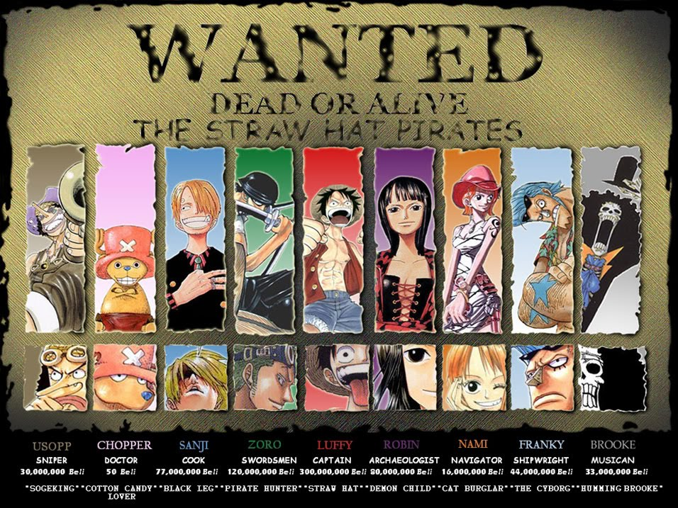
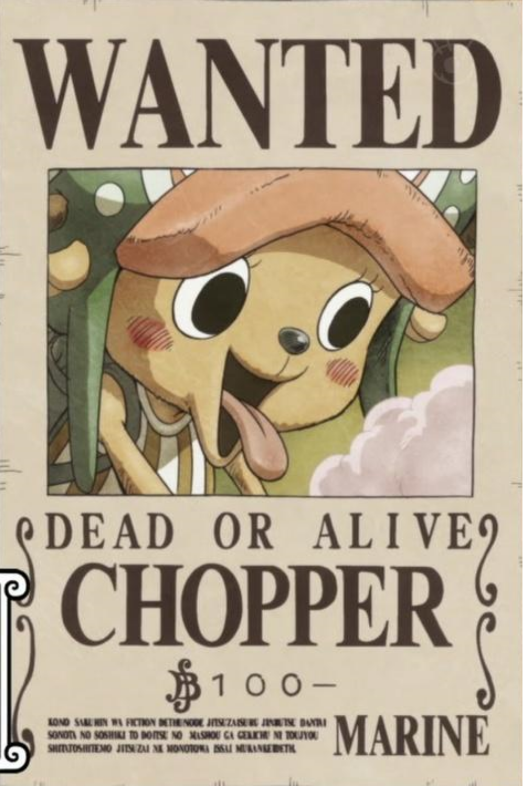

Apa itu One Piece?
One Piece (bahasa Jepang: ワンピース Hepburn: Wan Pīsu) adalah
sebuah seri manga Jepang yang ditulis dan diilustrasikan oleh
Eiichiro Oda. Manga ini telah dimuat di majalah Weekly Shōnen Jump
milik Shueisha sejak tanggal 22 Juli 1997, dan telah dibundel
menjadi 91 volume tankōbon. Ceritanya mengisahkan petualangan Monkey
D. Luffy, seorang anak laki-laki yang memiliki kemampuan tubuh
elastis seperti karet setelah memakan Buah Iblis secara tidak
disengaja. Dengan kru bajak lautnya, yang dinamakan Bajak Laut Topi
Jerami, Luffy menjelajahi Grand Line untuk mencari harta karun
terbesar di dunia yang dikenal sebagai "One Piece" dalam rangka
untuk menjadi Raja Bajak Laut yang berikutnya.
Manga ini telah diadaptasi menjadi sebuah animasi video asli (OVA)
yang diproduksi oleh Production I.G pada tahun 1998, dan sebuah
serial anime yang diproduksi oleh Toei Animation, yang mulai tayang
di Jepang pada tahun 1999. Sebagai tambahan, Toei juga telah
memproduksi tiga belas film animasi, satu OVA dan sebelas episode
khusus televisi. Beberapa perusahaan telah mengembangkan berbagai
jenis pernak-pernik seperti permainan kartu dagang dan beberapa
permainan video. Versi manganya telah dilisensi untuk dirilis dalam
bahasa Inggris di Amerika Utara dan Britania Raya oleh Viz Media dan
di Australia oleh Madman Entertainment. Versi animenya telah
dilisensi oleh 4Kids Entertainment untuk perilisan versi bahasa
Inggris di Amerika Utara pada tahun 2004, sebelum lisensi tersebut
dicabut dan kemudian diakuisisi oleh Funimation pada tahun 2007.
One Piece telah menerima pujian atas alur cerita, gambar,
karakterisasi, dan humornya. Beberapa volume dari manga ini telah
memecahkan rekor penerbitan, termasuk cetakan awal tertinggi dari
buku apa pun di Jepang. Situs web resmi untuk manga One Piece karya
Eiichiro Oda mengumumkan bahwa manga ini telah meraih Guinness World
Record untuk kategori "salinan terbanyak yang diterbitkan untuk seri
buku komik yang sama oleh seorang penulis tunggal". Hingga bulan Mei
2018, manga ini telah terjual hingga lebih dari 440 juta kopi di
seluruh dunia, menjadikannya seri manga terlaris dalam sejarah. One
Piece juga menjadi manga terlaris selama sepuluh tahun
berturut-turut pada tahun 2017.
Popularitas
Manga One Piece mulai diserialisasikan pada majalah Shonen Jump
edisi #34 pada tanggal 4 Agustus 1997. Animenya mulai diproduksi
oleh Toei Animation di Fuji Television pada 20 Oktober 1999.
Pada awalnya, Eiichiro Oda merencanakan One Piece akan berjalan
sekitar 5 tahun, dan dia telah menetapkan endingnya. Tetapi dia
terlalu "menikmati" jalan ceritanya dan sekarang dia tidak tahu
kapan One Piece akan berakhir.
One Piece merupakan manga terlaris sepanjang sejarah Shonen Jump.
Manga ini juga yang menyebabkan total penjualan Shonen Jump naik
pada 11 tahun terakhir ini. Volume 25 memegang rekor penjualan manga
di Jepang, dengan 2.630.000 unit terjual pada cetakan pertama. Dan
volume 46 mencapai lebih dari 140.000.000 unit terjual dan merupakan
manga tercepat yang mencapai total penjualan 100.000.000.
Hingga saat ini One Piece memecahkan rekor sebagai manga paling
laris sepanjang sejarah. Kesuksesan One Piece bahkan melebihi
gabungan no 2 Naruto, no 3 Kimi ni Todoke, no 4 Fairy Tail, no 5
Bleach, no 6 Bakuman, no 7 Gintama, dan no 8 Fullmetal Alchemist
dengan total penjualan One Piece lebih dari 300 juta kopi.
Kru Bajak Laut Topi Jerami

Sebagai hasil dari pilihan Luffy yang bergabung dengan kru, Topi
Jerami terkenal sebagai salah satu kru bajak laut yang paling
bervariasi di dunia 'One Piece'.

Monkey D. Luffy
Luffy memiliki cita-cita menjadi Raja Bajak Laut setelah bertemu
dengan Shanks Si Rambut Merah yang singgah di pulau
kelahirannya, Fusha. Topi jerami yang menjadi ciri khasnya
adalah pemberian dari Shanks dan dia berjanji akan memberikan
topi itu kembali kepadanya saat mereka bertemu kembali.
Luffy adalah pemakan buah iblis Gomu Gomu no Mi sehingga ia
menjadi manusia karet. Ciri khas bertarungnya adalah menyerang
dengan memanjangkan bagian tubuhnya. Semua nama jurusnya selalu
diawali dengan kata "Gomu-gomu" dan kemudian diikuti dengan nama
senjata atau artileri (contoh: 'Gomu Gomu no Pistol', 'Gomu Gomu
no Bazooka', 'Gomu Gomu no Gatling', dll).

Roronoa Zoro
Merupakan kru pertama yang ikut bergabung dalam Kelompok Topi
Jerami dan menjabat sebagai wakil kapten. Teknik bertarungnya
menggunakan 3 pedang yang merupakan pedang langka dalam dunia
One Piece. Zoro memiliki cita-cita untuk menjadi pendekar pedang
terkuat di dunia, mewarisi cita-cita sahabat masa kecilnya,
Kuina, yang meninggal karena kecelakaan.

Nami
Navigator dari Kelompok Topi Jerami yang dapat merasakan
perubahan cuaca dengan tubuhnya. Kemampuan lain selain navigasi
adalah mencuri dan membuat peta. Cita-cita dari Nami adalah
membuat peta seluruh dunia. Senjata yang digunakan adalah
tongkat dengan berbagai modifikasi dari Usopp.

Usopp
Penembak jitu di Kelompok Bajak Laut Topi Jerami. Bercita-cita
menjadi penembak jitu pemberani di seluruh lautan dan ingin
pergi ke Pulau Elbaf. Ayahnya, Yasopp, adalah seorang penembak
jitu di Kelompok Bajak Laut Shanks. Sangat suka berbohong, dan
bercerita yang tinggi-tinggi. Bertarung dengan memakai tembakan
katapel dengan peluru unik dan jebakan-jebakan.

Vinsmoke Sanji
Koki di anggota Bajak Laut Topi Jerami dan merupakan rival
Roronoa Zoro. Sanji merupakan seorang bangsawan dari negeri kuat
Germa 66. Ia melarikan diri dari kerajaannya menjadi seorang
koki di sebuah kapal. Dia seorang Koki yang bercita-cita
menemukan lautan legendaris di mana semua sumber bahan makanan
berasal, yaitu All Blue. Ia juga merupakan murid dari Zeff si
Kaki Merah, koki andal dari Restoran Baratie yang dulunya bajak
laut.

Tony Tony Chopper
Dokter yang berwujud rusa kutub ini mempunyai tujuh wujud
perubahan. Chopper mengemban keinginan dari dokter terhebat di
dunia dokter Hiluluk, yang bercita-cita menyembuhkan segala
penyakit yang ada di dunia. Dia pemakan buah iblis Hito Hito
sehingga dapat berbicara layaknya manusia. Kekuatan buah
Hito-Hito juga membuatnya bisa berubah menjadi berbagai macam
wujud termasuk menjadi monster. Setelah 2 tahun, dia bisa
memakai wujud monsternya tanpa kehilangan kesadaran.

Nico Robin
Arkeolog satu-satunya di dunia yang tersisa dari Pulau Ohara
yang meneliti asal usul penyandang inisial 'D' melalui Poneglyph
yang mungungkapkan kejadian yang sebenarnya pada sejarah 100
tahun yang hilang. Merupakan buruan paling dicari oleh pihak
pemerintah dunia karena dianggap sebagai iblis yang dapat
mengacaukan perdamaian dunia. Hal ini dibuktikan dengan nilai
buruan pada saat umurnya 8 tahun sangat tinggi. Pemakan buah
iblis Hana Hana sehingga dapat menggandakan anggota tubuhnya di
mana saja (tetapi lebih sering menggandakan tangannya).
Bertarung dengan menggandakan tubuhnya, bisa digunakan untuk
berbagai variasi jurus (seperti menumbuhkan tangan di tubuh
lawan lalu memukulnya). Saat menggunakan kekuatannya dia
menyilangkan tangannya.

Franky
Cyborg sekaligus Tukang kayu kapal yang bercita-cita membangun
kapal impian, kapal yang mampu mengarungi seluruh lautan seperti
kapal Raja Bajak Laut Gol D. Roger, Oro Jackson, yang dibuat
oleh Tom. Saat Tom ditangkap oleh Angkatan Laut, Franky berniat
menghentikan kereta api atas laut yang mengangkut Tom ke Ennies
Lobby. Akibatnya, ia tertabrak kereta tersebut dan nyaris
meninggal. Untuk bertahan hidup, ia mengubah struktur tubuhnya
dengan berbagai teknologi hingga menjadi Cyborg. Teknik
bertarung Franky cukup bervariasi. Ia menggunakan senjata yang
tersembunyi di seluruh tubuhnya, dan menggunakan Cola sebagai
bahan bakar. Dua tahun kemudian, setelah berkumpul kembali,
Franky merakit ulang tubuhnya dengan teknologi canggih dari
Angkatan Laut, yang merupakan hasil penelitian dari Vegapunk,
seorang ilmuwan dari Angkatan Laut. Selain itu dia sekarang
telah mengembangkan robot tempur yang ia namakan "General Iron
Pirates" dan robot ini bisa berubah menjadi sepeda motor tempur
dan tank baja.

Brook
Manusia tengkorak berambut afro dan juga seorang pemusik yang
direkrut setelah peristiwa Thriller Bark. Dia merupakan bajak
laut yang berjanji pada seekor paus yang bernama Laboon dan
bercita-cita untuk meneruskan perjalanan hingga Raftel, pulau
ujung dunia dan berjanji akan kembali lagi menemui Laboon.
Bertarung dengan menggunakan pedang dan biolanya. Kekuatan
musiknya bisa menghipnosis orang yang mendengarkan lagunya dan
juga bisa menidurkan orang. Pemakan buah iblis Yomi Yomi yang
artinya hidup kembali. Sebenarnya dia sudah lama meninggal,
tetapi karena kekuatan buah iblis ini arwahnya kembali dan
menemukan jasadnya yang telah tinggal tulang belulang. Setelah 2
tahun berlatih mampu menyambung tubuhnya yang putus, pedangnya
bisa membekukan dan bisa mengeluarkan roh dari jasad
tengkoraknya.

Jinbei
Manusia ikan satu-satunya di kelompok topi jerami yang bergabung
dengan kelompok topi jerami di arc wholecake island.